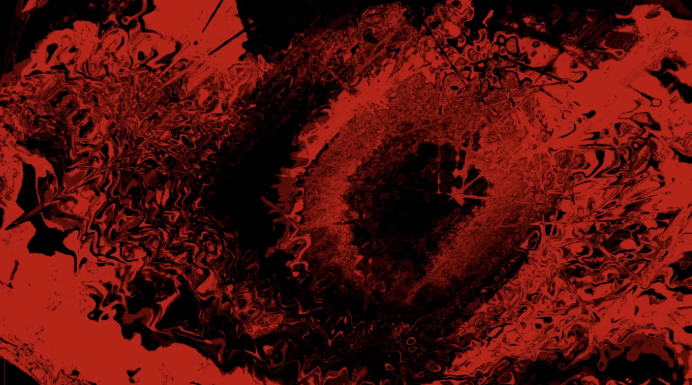

Earlier work / 2023
What Colour Is Your Voice?
색과 움직임으로 번역되는 목소리.

프로젝트
사운드, 이미지와 주관적 지각을 연결한 초기 실험입니다.
What Colour Is Your Voice?는 목소리를 입력으로 받아 색과 무빙이미지를 실시간으로 변화시킵니다. 말하거나 노래하는 행위가 TouchDesigner 기반의 비주얼 시스템을 활성화하며, 목소리와 감정, 자기표현을 인터랙티브 오디오비주얼 작업으로 연결합니다.
기록
프로젝트 사진과 무빙이미지 기록을 이곳에 추가할 예정입니다.